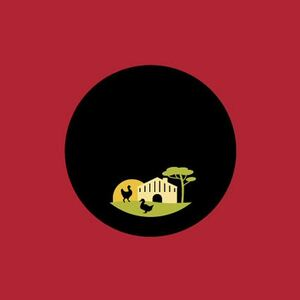

Trade Mark Journal No.2026/010 6 March 2026
WO0000001902282 (29,31,35)
Office of origin: France
Date of International Registration:4 December 2025
Date of designation in the UK:
4 December 2025

International priority date claimed: 5 June 2025
(France)
(5153444)
- Class 29
- Meat; fish; poultry; game; meat extracts; duck; chicken; yellow chicken; black chicken; white chicken; guinea fowl; yellow guinea fowl, black guinea fowl; poussin; turkey; capon; Muscovy duck; poularde; quails; duck cuts, especially, magrets, aiguillettes, thigh; duck confit; liver; foie gras; vegetable pâtés; liver pâté; rillettes; poultry-based cooked dishes; charcuterie; salted meats; cooked dishes based on chicken; culinary preparations based on meat, poultry and/or game and chicken; culinary preparations based on liver and/or foie gras; preserved fruit; frozen fruits; dry fruits; cooked fruits; preserved vegetables; deep-frozen vegetables; dried vegetables; cooked vegetables; jellies; jams; compotes; eggs; milk; dairy products; edible oils and fats; butter; crustaceans (not live); canned meat; canned fish; cheeses; milk beverages with milk predominating; edible oils and fats, namely goose and duck fat; preserved truffles.
- Class 31
- Agriculture and aquaculture products, horticulture and forestry products; live animals; fresh fruits; fresh vegetables; seeds (grains); natural plants; natural flowers; animal foodstuffs; malt; natural turf; live crustaceans; live bait for fishing; unprocessed cereal grains; shrubs; plants; seedlings; trees (plants); fresh citrus fruits; unsawn timber; fodder.
- Class 35
- Advertising; dissemination of advertising material (leaflets, prospectuses, printed matter, samples); demonstration of goods; promotion of goods on behalf of third parties; presentation of goods on all communication media for retail or wholesale via an Internet site and in a shop; retail or wholesale, mail order retail or wholesale, retail or wholesale via the Internet or via any electronic remote ordering means in particular of the following goods, namely: meat, fish, poultry, game, meat extracts, duck, chicken, yellow chicken, black chicken, white chicken, guinea fowl, yellow guinea fowl, black guinea fowl, poussin, turkey, capon, Muscovy duck, poularde, quails, duck cuts, especially, magrets, aiguillettes, thigh, duck confit, liver, foie gras, vegetable pâtés, liver pâtés, rillettes, cooked dishes based on poultry, charcuterie, salted meats, cooked dishes based on chicken, culinary preparations based on meat, poultry and/or game and chicken, culinary preparations based on liver and/or foie gras, preserved fruits, dried fruits, cooked fruits, preserved vegetables, frozen vegetables, dried vegetables, cooked vegetables, jellies, jams, compotes, eggs, milk, dairy products, food oils and fats, butter, crustaceans (not live), meat, tinned, fish, tinned, cheese, milk beverages, milk predominating, food oils and fats, namely goose and duck fat, preserved truffles, agricultural and aquaculture products, horticultural and forestry products, live animals, fresh fruits, fresh vegetables, seeds (grains), natural plants, natural flowers, foodstuffs for animals, malt, natural turf, live crustaceans, live bait for fishing, unprocessed cereal seeds, shrubs, plants, seedlings, trees (plants), fresh citrus fruits, unsawn timber, fodder.
LES FERMIERS LANDAIS
Representative: AUBERT Bérénice SANTARELLI, 7-9 Allée Haussmann, F-33300 BORDEAUX, FRANCE